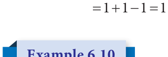
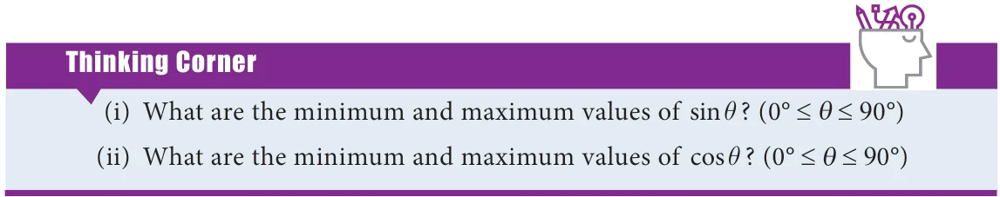

<!DOCTYPE html>
<html lang="en">
<head>
<meta charset="UTF-8">
<meta name="viewport" content="width=device-width,initial-scale=1">
<title>Exercise 6.3 — Trigonometry</title>
<meta name="description" content="Class 9 Mathematics · Trigonometry · Exercise 6.3">
<link rel="icon" href="data:image/svg+xml,<svg xmlns='http://www.w3.org/2000/svg' viewBox='0 0 100 100'><text y='.9em' font-size='90'>📘</text></svg>">
<link rel="stylesheet" href="../../../assets/book.css">
<link rel="stylesheet" href="https://cdn.jsdelivr.net/npm/katex@0.16.11/dist/katex.min.css" crossorigin="anonymous">
</head>
<body>
<header class="topbar">
<div class="topbar-in">
  <div class="crumb">
    <span class="c1"><a href="../../../index.html">Library</a> · <a href="../../index.html">Class 9 Mathematics</a></span>
    <span class="c2">Trigonometry · Exercise 6.3</span>
  </div>
  <a class="tb-btn" data-nav="prev" href="../../06-trigonometry/05-trigonometric-ratios-for-complementary-angles-c-6.3/index.html" title="6.3 Trigonometric Ratios for Complementary Angles C">←</a>
  <details class="drawer"><summary class="tb-btn" title="Sections in this chapter">☰</summary>
<div class="drawer-panel"><div class="dh">Trigonometry</div><a href="../01-chapter-opener/index.html">Chapter opener; 6.1 Introduction</a><a href="../02-exercise-6.1/index.html">Exercise 6.1</a><a href="../03-trigonometric-ratios-of-some-special-angles-6.2/index.html">6.2 Trigonometric Ratios of Some Special Angles</a><a href="../04-exercise-6.2/index.html">Exercise 6.2</a><a href="../05-trigonometric-ratios-for-complementary-angles-c-6.3/index.html">6.3 Trigonometric Ratios for Complementary Angles C</a><a href="../06-exercise-6.3/index.html" aria-current="page">Exercise 6.3</a><a href="../07-method-of-using-trigonometric-table-6.4/index.html">6.4 Method of using Trigonometric Table</a><a href="../08-exercise-6.4/index.html">Exercise 6.4</a><a href="../09-exercise-6.5/index.html">Exercise 6.5</a><a href="../10-summary/index.html">Points to Remember</a><a href="../11-ict-corner/index.html">ICT Corner</a></div></details>
  <a class="tb-btn" data-nav="next" href="../../06-trigonometry/07-method-of-using-trigonometric-table-6.4/index.html" title="6.4 Method of using Trigonometric Table">→</a>
  <button class="tb-btn" data-theme-toggle title="Toggle light / dark" aria-label="Toggle light or dark theme">◐</button>
</div>
<div class="progress"><span style="width:71.5%"></span></div>
</header>
<main class="wrap">
<div class="sec-head">
  <p class="eyebrow"><a href="../index.html">Chapter 6 · Trigonometry</a></p>
  <h1>Exercise 6.3</h1>
  <p class="sec-meta">Textbook pages 14 · 3 figures</p>
</div>
<article class="prose">
<p>sin cos sin72 sin cos sin72</p>
<figure class="fig"></figure>
<ul class="qlist">
<li><span class="mk">(i)</span><span class="lt">If cosec A sec34 ,then find A (ii) If tanB cot47 then find , B.</span></li>
</ul>
<h4 class="callout-h" id="s-solution">Solution</h4>
<ul class="qlist">
<li><span class="mk">(i)</span><span class="lt">We know that cosec A (ii) We know that tanB cot( )</span></li>
</ul>
<p>sec(90 ) sec( ) cot( ) cot</p>
<figure class="fig"></figure>
<p>We get \(A= ^{\circ} -\) We get \(= ^{\circ} - ^{\circ}\)</p>
<p>Find the value of the following:</p>
<p>cossin   cossin   cos cossin cossin sin(cos ) cos</p>
<ul class="qlist">
<li><span class="mk">(iii)</span><span class="lt">tan \(^{\circ}\) tan \(^{\circ}\) tan \(^{\circ}\) tan \(^{\circ}\) tan \(^{\circ}\)</span></li>
</ul>
<p>+ cos( \(^{\circ} -\) )tan sec( \(^{\circ} -\) ) \(\frac{cotq}{tan(90 ^{\circ} -\) q)} sin( \(^{\circ} -\) )cot( \(^{\circ} -\) )cosec(90 \(^{\circ} -\) q)</p>
<figure class="fig wide"></figure>
</article>
<nav class="pager"><a class="" data-nav="prev" href="../../06-trigonometry/05-trigonometric-ratios-for-complementary-angles-c-6.3/index.html"><span class="dir">← Previous</span><span class="t">6.3 Trigonometric Ratios for Complementary Angles C</span><span class="ch">Trigonometry</span></a><a class="nx" data-nav="next" href="../../06-trigonometry/07-method-of-using-trigonometric-table-6.4/index.html"><span class="dir">Next →</span><span class="t">6.4 Method of using Trigonometric Table</span><span class="ch">Trigonometry</span></a></nav>
</main><footer class="site">Generated from the source textbook PDFs · text, figures and exercises belong to their respective publishers.</footer><script defer src="https://cdn.jsdelivr.net/npm/katex@0.16.11/dist/katex.min.js" crossorigin="anonymous"></script>
<script defer src="https://cdn.jsdelivr.net/npm/katex@0.16.11/dist/contrib/auto-render.min.js" crossorigin="anonymous"
  onload="renderMathInElement(document.body,{delimiters:[
    {left:'\\(',right:'\\)',display:false},
    {left:'$$',right:'$$',display:true},
    {left:'\\[',right:'\\]',display:true}],throwOnError:false,ignoredTags:['script','noscript','style','textarea','pre','code']})"></script>
<script src="../../../assets/book.js"></script>
<script defer src="../../../../assets/search.js?v=1789782769"></script>
<script defer src="../../../../assets/screenshot.js?v=1789782769"></script>
</body>
</html>
